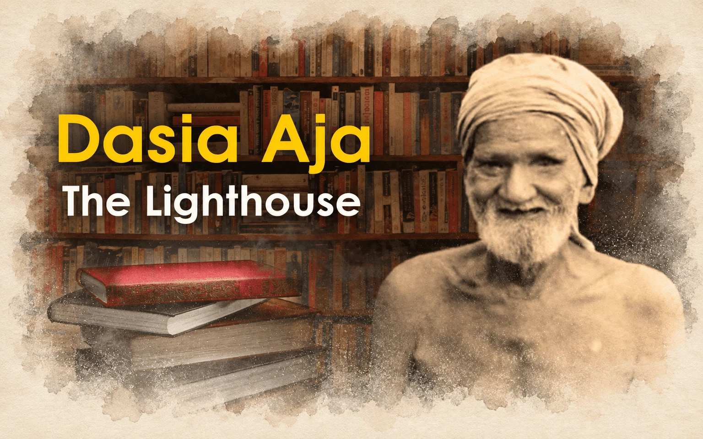

Dasia Aja: The Lighthouse
Read in book
In the early eighties, I came in contact with Dasarathi Patnaik fondly called Dasia Aja in a literary event. In those days he was a familiar figure in literary gatherings. A half-clad one-eyed tall man with a turban on his head, a lathi in his hand, and a large bag full of books and magazines collected from different people.
He used to visit houses of people across the state from Baripada to Bolangir and from Cuttack to Koraput with the sole purpose of collecting rare books, magazines, and newspapers. He also used to ask for contributions of ten paise for his library cum museum at his native village Udaypur, Nuagaon in Nayagarh district (then a Sub Division). Himself a school dropout, and he started an ambitious journey to spread knowledge in society.
At the first sight, I was drawn to this man and admired him for his noble deeds. We developed a mutual friendship from those days and he never failed to send me a postcard whenever he noticed one of my poems published in any magazine. His encouraging words were inspiring for many writers like me who were receiving such postcards regularly.
As I remember, it was in 1982 when Odia Yuva Lekhak Sammelan organized its annual meeting in Chandikhol. As usual, he was present there. In those days Salandi magazine edited by Niranjan Nayak was a platform for young writers and a lot of experimental writings were being published in Salandi thanks to its enthusiastic editor. In one of its issues, which was released in the same meeting by veteran poet Sachi Routray, one of my experimental love poems was published. A few of my close friends suggested I recite the poem in the poetry reading session. But anticipating criticism from the conservative audience I declined to do so.
Consequently, some of them recited it themselves on the stage. Immediately, there were protests from different people including some ladies present. One of them was Dasia Aja who declared on the stage to boycott the session since the poem was derogatory to ladies. Simultaneously, some poets defended the poem as a piece of art and that there is nothing called obscene in art and literature. It became a battleground for both groups. Somehow, the matter was sorted out amicably later.
My intimacy with Dasia Aja developed over the years. In 1984 I joined All India Radio, Cuttack. One day I proposed to Shri Bighnaraj Patel, then a Member of Board of Revenue to visit the village of Dasia Aja and see the good work he was doing. On a Sunday both of us went there and got highly impressed by his marvelous works. It had a huge depository of rare manuscripts, books, journals, antiques, and even foreign coins collected over the years by a single person without any institutional support. Then I decided to produce a radio documentary about him.
When I submitted the proposal, the then Station Director Shri Shyamanand Baishya, who was fond of me, immediately approved it. Then the radio documentary titled Andharu Alokaku Gotie Pada (one step from darkness to light) was produced and broadcast throughout the state. It got huge appreciation from the listeners. It carried an interview with him and comments from researchers and intellectuals alike including Shri Bighnaraj Patel.
My relationship with him became more intimate after my marriage in 1988 since my father-in-law was then Sub Collector in Nayagarh and he was a frequent visitor to his residence to seek his patronage and support. He thereafter considered me as natuni jwain (grandson-in-law) and his affection for me increased.
The constant connection between us was his postcard letters received at regular intervals commenting something or other on my poems published in several magazines those days. By then in his eighties, his personal reputation and the reputation of his organization had got firmly established in the State. Scholars from outside the State and even from abroad also visited Dasarathi Pathagara to collect materials for research. He was being acknowledged as the father figure of the library movement in the State.
With the advancement of age, he could not afford to frequently visit places and meet people personally as before. The question was raised about the future of the institution he established after his departure. Shri Rajendra Kishore Panda was then Secretary of the Culture department. One day we discussed the issue and he suggested forming a trust for the purpose. He then prepared a trust deed and got it typed on stamp paper.
The Collector, Nayagarh was made the President, and Culture Department assured an annual recurring grant for the organization. He then entrusted me with the onerous task of getting it signed by Dasia Aja. I proceeded to his residence with the trust deed. He was then staying with his son in a rented house in Nayapalli, Bhubaneswar near Mumtaz Alli High School. When I revealed the proposal in presence of his family members, his sons protested. I tried to convince them but they were adamant.
The old man was listening silently to our arguments. Finally, he asked me to bring the papers and put his signature to the dismay of his family members. I had no words to thank the man for his courage and conviction. I came back with the mission accomplished. Shri Panda was anxiously awaiting my arrival. When I handed over the papers to him, he had a sigh of relief. He profusely thanked me for doing an immense job for the larger interest of the state and society. He got it officially registered and the trust came into existence.
A few years later in 1997 at the age of 90, one fine morning, he was found dead in the well of the institution he founded with his love and labor in mysterious circumstances. It was a terrible shock for many of us who knew him well. He is no more with us but his institution still serves as a repository of knowledge for scholars and researchers across the globe.
Leave a thought
No account needed. Your name and comment appear publicly after approval.